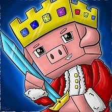
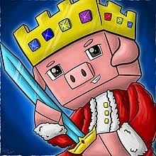
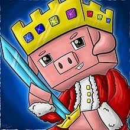

Alexander (June 1, 1999 – June 2022[a]), known online as Technoblade (/ˈtɛk.noʊˌbleɪd/ TEK-noh-blayd), was an
American YouTuber known for his Minecraft videos, livestreams, and involvement in the Dream SMP. Technoblade
registered his main channel on YouTube in 2013. His videos consisted primarily of Minecraft gameplay,
particularly on the minigame server Hypixel. After rising to popularity in 2019 for his performances in player
versus player (PvP) events, Technoblade was invited to the Dream SMP Minecraft server in 2020, further
increasing his following.
In August 2021, Technoblade announced his diagnosis with cancer. Following unsuccessful treatment attempts,
Technoblade died from metastatic sarcoma in June 2022,[b] which prompted widespread reactions across both the
Minecraft and YouTube communities. At the time of his death, his main YouTube channel had reached nearly 11
million subscribers.[2]